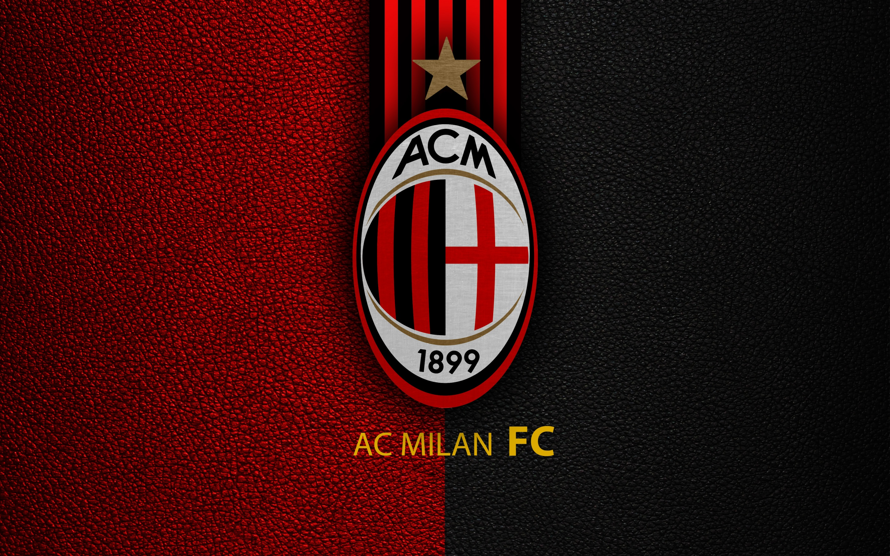
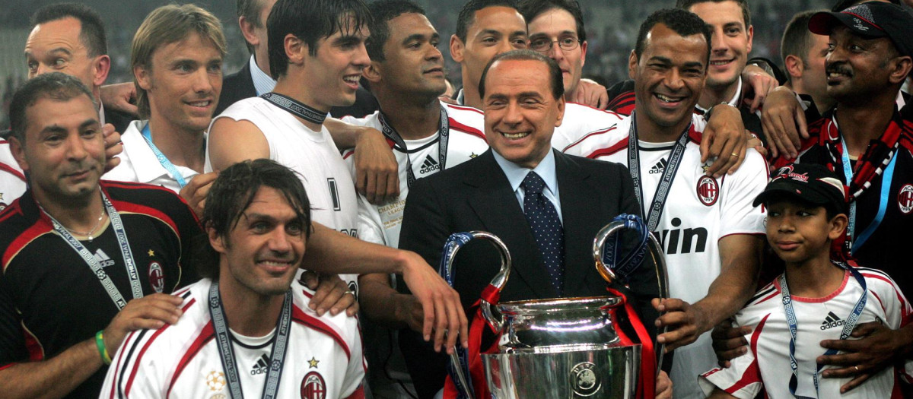
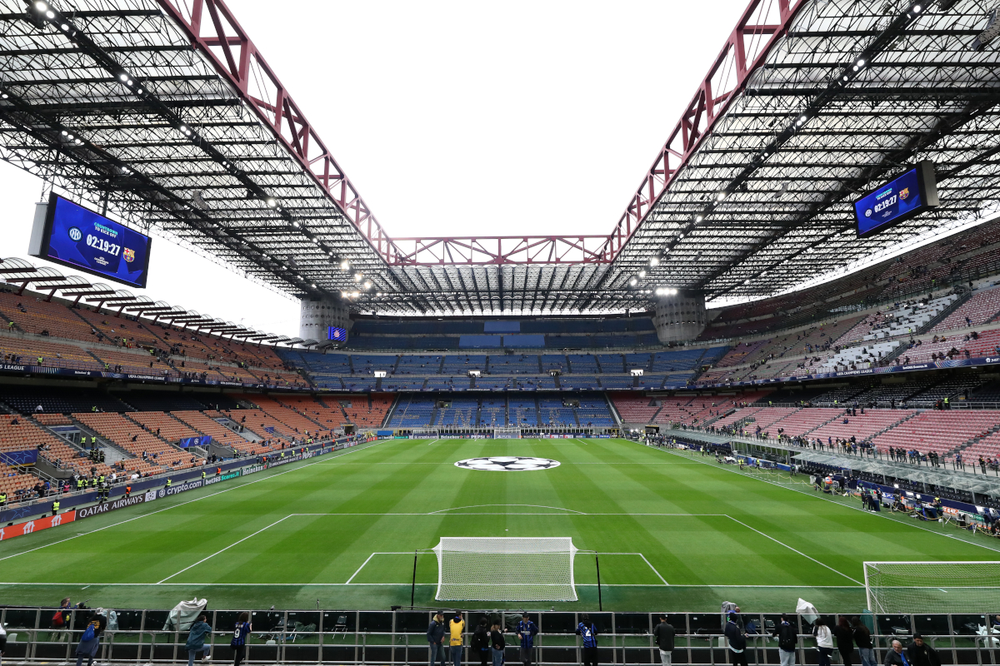

Rossoneri dal 1899
Uma camisa. Uma cidade. Uma história.
Vermelho e preto representam a paixão e a determinação que acompanham o Milan desde sua fundação.
Il Diavolo. Sete vezes campeão da Europa, dezenove vezes campeão italiano e uma paixão que atravessa gerações.
7× campeão europeu 19× campeão italiano

Camisa listrada em vermelho e preto, as cores rossoneri. O apelido “Il Diavolo” (o Diabo) vem do vermelho de fogo e do preto da noite de Milão, segundo a tradição do clube.
Fundado em 16 de dezembro de 1899 como Milan Foot-Ball and Cricket Club pelo inglês Herbert Kilpin, que também foi o primeiro capitão e treinador.
O Derby della Madonnina contra a Inter, que divide o mesmo estádio, é um dos maiores clássicos do mundo.
Vermelho e preto representam a paixão e a determinação que acompanham o Milan desde sua fundação.
| Nome completo | Associazione Calcio Milan |
| Apelidos | Rossoneri, Il Diavolo, Milanisti |
| Estádio | San Siro (Giuseppe Meazza) |
| Técnico (2026–27) | Ruben Amorim |
| Competições 2026–27 | Serie A, Coppa Italia, Liga Europa |

Jogadores de destaque da temporada 2026–27. O elenco pode mudar ao longo da janela de transferências, então confira o site oficial do clube para a lista atualizada.


Lateral e zagueiro, passou 25 anos no clube e é um dos maiores defensores da história. Venceu cinco Champions.
Capitão e líder da defesa campeã nos anos 80 e 90. Sua camisa 6 foi aposentada.
Atacante holandês, três vezes Bola de Ouro, encurtado por lesões mas inesquecível.
Meio-campista versátil e símbolo do Milan de Sacchi.
Bola de Ouro de 2007, o craque brasileiro que conduziu o time à glória em Atenas.
Artilheiro ucraniano e Bola de Ouro de 2004.
O maestro do meio-campo da era Ancelotti.
O “Golden Boy” dos anos 60 e primeiro italiano a receber a Bola de Ouro.

Inaugurado em 1926, o estádio Giuseppe Meazza recebe Milan e Inter e tem capacidade de cerca de 75 mil torcedores. Apelidado de “La Scala del Calcio”, já sediou finais europeias e Copas do Mundo. Os dois clubes discutem há anos a construção de uma nova arena, por isso vale acompanhar as notícias oficiais.